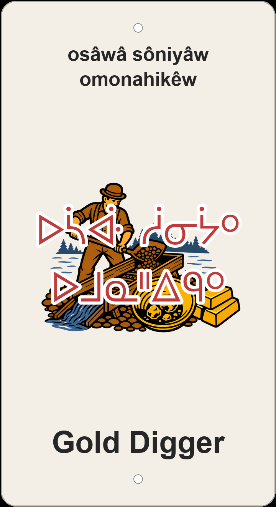

"gold (yellow-money) digger"

3D-printed Gold Digger sign — multi-colour screenprint of a riverside placer miner shovelling pay-dirt into a sluice box, with a gold pan of nuggets and a stack of gold bars.
The English trail name Gold Digger sits in Gold Bar — a neighbourhood named for the placer miners who worked the North Saskatchewan River for gold in the 1890s — and the plaque carries that history into nêhiyawêwin as osâwâ-sôniyâw omonahikêw: a digger (omonahikêw) after gold (osâwâ-sôniyâw, literally 'yellow-money'). The compound osâwâ-sôniyâw is how Plains Cree names the metal without borrowing English: osâwâ 'yellow' stacked onto sôniyâw 'money.'
English does not stop at geology. A 'gold digger' is also the slur for someone chasing a partner's wealth — and the Cree keeps both readings alive by pairing an agent noun with the money-word rather than the ore-word osâwâpisk 'yellow metal.' The sign's screenprint makes the prospector literal: a riverside miner in a bowler hat tipping pay-dirt into a wooden sluice box (grizzly), a gold pan of nuggets, and a stack of gold bars in the foreground — honest placer mining on the riverbank the neighbourhood is named for.
In Gold Bar/Capilano Park the pun trails talk to each other on the same hillside. Nearby tipiskâw-pîsim kâ-manahât (Moonraker) rakes the night-sun while Gold Digger digs yellow-money from the ground; Kêsal pimipahtâwin (Kessel Run) and okîmotisk-atoskêw (Hustler) / okîmotisk amaciwêwin (Hustler Uphill) chase their own pop-culture nicknames beside Mârk Mesiye (Mark Messier), Kapilâno wâwiyêyâw (Capilano Crescent), opamê-meskanaw (Sideline), têpwêwin mîna kitowin (Hoot and Holler), kâ-ayâhastêk atoskêwin (Risky Business), and cimâsin mîna wîhkasin (Short 'n Sweet) — English nicknames with nêhiyawêwin names set beside them on the land.
Like every sign in this series, Gold Digger sits on ᓀᐦᐃᔭᐤ ᐊᐢᑭᕀ Nêhiyaw-Askiy — Plains Cree territory, Treaty 6, and a homeland of the Métis Nation. These plaques are one way of putting nêhiyawêwin back on the land it was always spoken on.
About 1 km of singletrack in Gold Bar/Capilano Park — 25 m of climbing and 20 m of descent along the river-valley network. Tap through to Trailforks (gold-digger-31547) for the full map and 149-point GPX track.
Explore the trail on Trailforks for maps, conditions, and details.
sôniyâw 'money' + monahikêw 'digs.' Strips away the 'yellow/gold' colour and lands squarely on the romantic-mercenary sense.
osâwâpisk 'gold/yellow metal' — the literal mining sense, metal-first rather than money-first.
| English | SRO | Syllabics |
|---|---|---|
| gold (yellow-money) digger (the plaque) | osâwâ-sôniyâw omonahikêw | ᐅᓵᐚ ᓲᓂᔮᐤ ᐅᒧᓇᐦᐃᑫᐤ |
| money-digger | sôniyâ-monahikêw | ᓲᓂᔮ ᒧᓇᐦᐃᑫᐤ |
| digger of gold-metal | omonahikêw osâwâpisk | ᐅᒧᓇᐦᐃᑫᐤ ᐅᓵᐚᐱᐢᐠ |
| gold (yellow-money) | osâwâ-sôniyâw | ᐅᓵᐚ ᓲᓂᔮᐤ |
| one who digs/gathers | omonahikêw | ᐅᒧᓇᐦᐃᑫᐤ |
SRO uses ê î ô â. Syllabics match the SRO shown.
Dialectal preferences may affect minor spelling choices; check local norms for signage.
References: itwêwina, Online Cree Dictionary, Plains Cree Dictionary
Each sign is 3D printed in Edmonton. Want one for your own trail, cabin or wall? Email hello@nehiyomtb.ca.